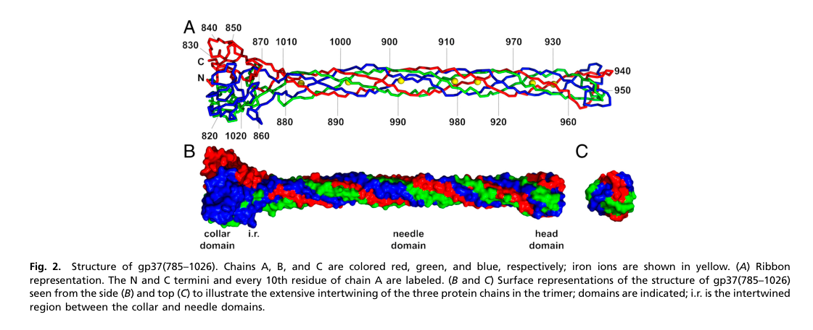

TODO: Add description for P03744
| GO Term | Evidence | Action | Reason |
|---|---|---|---|
|
GO:0005198
structural molecule activity
|
IEA
GO_REF:0000002 |
PENDING |
Summary: TODO: Review this GOA annotation
|
|
GO:0019062
virion attachment to host cell
|
IEA
GO_REF:0000043 |
PENDING |
Summary: TODO: Review this GOA annotation
|
|
GO:0046718
symbiont entry into host cell
|
IEA
GO_REF:0000043 |
PENDING |
Summary: TODO: Review this GOA annotation
|
|
GO:0098015
virus tail
|
IEA
GO_REF:0000043 |
PENDING |
Summary: TODO: Review this GOA annotation
|
|
GO:0098024
virus tail, fiber
|
IEA
GO_REF:0000043 |
PENDING |
Summary: TODO: Review this GOA annotation
|
|
GO:0098671
adhesion receptor-mediated virion attachment to host cell
|
IEA
GO_REF:0000043 |
PENDING |
Summary: TODO: Review this GOA annotation
|
The research report should be a detailed narrative explaining the function, biological processes, and localization of the gene product. Citations should be given for all claims.
You should prioritize authoritative reviews and primary scientific literature when conducting research. You can supplement
this with annotations you find in gene/protein databases, but these can be outdated or inaccurate.
We are specifically interested in the primary function of the gene - for enzymes, what reaction is catalyzed, and what is the substrate specificity? For transporters, what is the substrate? For structural proteins or adapters, what is the broader structural role? For signaling molecules, what is the role in the pathway.
We are interested in where in or outside the cell the gene product carries out its function.
We are also interested in the signaling or biochemical pathways in which the gene functions. We are less interested in broad pleiotropic effects, except where these elucidate the precise role.
Include evidence where possible. We are interested in both experimental evidence as well as inference from structure, evolution, or bioinformatic analysis. Precise studies should be prioritized over high-throughput, where available.
The literature retrieved matches the UniProt identity provided: UniProt P03744 is explicitly linked to bacteriophage T4 long tail fiber protein gp37 (gene product 37), described as the receptor-binding distal tip of the long tail fiber. This direct mapping appears in the primary structural biology paper that solved the receptor-binding tip structure and refers to “UniProt code P03744” for T4 gp37. (bartual2010structureofthe pages 3-5, bartual2010structureofthe media 795df93b)
T4 gp37 is a virion structural protein that forms the distal half of the bacteriophage T4 long tail fiber (LTF) and provides the receptor-recognizing “foot/tip” used for initial host contact. gp37 is not an enzyme; its primary function is mechanical/structural receptor recognition and transmission of adsorption cues into the infection nanomachine. (leiman2010morphogenesisofthe pages 21-22, mourosi2022understandingbacteriophagetail pages 2-4)
Key definitions used in the T4 adsorption literature:
- Long tail fibers (LTFs): primary, reversible host-recognition fibers (six per virion) that “search” the bacterial surface before irreversible steps of infection. (mourosi2022understandingbacteriophagetail pages 9-11, mesyanzhinov2004moleculararchitectureof pages 4-5)
- Receptor-binding domain (RBD)/tip: the extreme C-terminal region of gp37 that directly engages host receptors such as LPS and OmpC. (mourosi2022understandingbacteriophagetail pages 2-4, leiman2010morphogenesisofthe pages 21-22)
gp37 is located on the outer surface of the mature virion, within each of the six LTFs anchored around the baseplate. Cryo-electron tomography indicates many infective particles carry LTFs in a folded (retracted) conformation, with distal domains (including the gp37 tip region) contacting capsid features, consistent with a regulated deployment mechanism. (hu2015structuralremodelingof pages 1-3)
Across T4-focused reviews, gp37 is consistently described as 1026 amino acids (~109 kDa) and assembling as a homotrimer as part of the distal half-fiber. The canonical LTF composition and stoichiometry are gp34:gp35:gp36:gp37 = 3:1:3:3. (mourosi2022understandingbacteriophagetail pages 2-4, leiman2010morphogenesisofthe pages 21-22, leiman2010morphogenesisofthe pages 2-5)
The best-characterized region of gp37 is the C-terminal receptor-binding tip, solved by X-ray crystallography (PDB 2XGF). The structure describes an interwoven trimeric architecture with functionally distinct subregions:
- Collar domain: residues ~811–860 and 1016–1026 (trimeric collar). (bartual2010structureofthe pages 2-2)
- Needle/stem domain: residues ~881–933 and 960–1008/1009, forming an elongated β-structured “needle” about 150 Å long. (bartual2010structureofthe pages 2-2, bartual2010structureofthe pages 2-3)
- Distal head/tip: compact region near residues ~934–959 (also described as tip 932–959), implicated as the main receptor-interaction module. (bartual2010structureofthe pages 2-2, mourosi2022understandingbacteriophagetail pages 2-4)
A striking feature of the needle is the presence of multiple His–X–His motifs coordinating seven iron ions along the fiber axis, likely stabilizing the fold and conferring mechanical rigidity needed for adsorption signaling. (bartual2010structureofthe pages 2-2, bartual2010structureofthe pages 1-2)
gp37-containing LTFs are described as key host-range determinants, interacting reversibly with two canonical E. coli receptor types:
- Lipopolysaccharide (LPS) on E. coli B strains (rough LPS features are critical; O-antigen can inhibit adsorption). (leiman2010morphogenesisofthe pages 21-22, mourosi2022understandingbacteriophagetail pages 4-6)
- Outer membrane porin OmpC on E. coli K-12 strains, where structural docking places the gp37 head inside the OmpC extracellular cavity. (bartual2010structureofthe pages 3-5, mourosi2022understandingbacteriophagetail pages 7-9)
A modern mechanistic model emphasizes that gp37 tip–receptor interactions are weak, multivalent, and dynamic, enabling surface “walking” (repeated association/dissociation) to locate productive infection sites rather than “locking” immediately.
Quantitative data from single-molecule force measurements (AFM) report interaction forces of approximately 70 ± 29 pN for host LPS versus 46 ± 13 pN for non-host LPS, supporting the concept of relatively weak but efficient reversible adhesion. (mourosi2022understandingbacteriophagetail pages 7-9)
A further nuance is that stronger binding does not necessarily improve infection: specific tip mutations (e.g., I933A, N937A, G938A) were reported to increase static OmpC binding (2–3×) yet abolish infectivity in the summarized literature, implying that lateral mobility and correct multi-fiber engagement are mechanistically important. (mourosi2022understandingbacteriophagetail pages 9-11)
T4 LTFs are built from multiple gene products, and gp37 assembly is chaperone-dependent:
- The distal half-fiber involves gp36 + gp37 (both trimeric), with gp36 binding the N-terminus of gp37 during assembly. (leiman2010morphogenesisofthe pages 21-22)
- Proper folding/trimerization of gp37 requires phage-encoded chaperones: gp57A (supports trimerization of gp34 and gp37) and gp38 (specifically required for correct gp37 folding/assembly in classic T4). (leiman2010morphogenesisofthe pages 21-22, mourosi2022understandingbacteriophagetail pages 2-4)
- Soluble gp37 has been obtained by co-expression of gp37 with gp57A and gp38, and some C-terminal coiled-coil extensions can partially bypass gp38 dependence (indicating a tight relationship between gp37’s C-terminus and its maturation pathway). (leiman2010morphogenesisofthe pages 22-25)
Reviews describe T4 LTFs as the primary reversible sensors. Upon appropriate receptor engagement, a mechanical signal is transmitted to the baseplate, enabling subsequent irreversible steps: deployment/engagement of short tail fibers, baseplate rearrangements, sheath contraction, and genome injection. (mourosi2022understandingbacteriophagetail pages 9-11, leiman2010morphogenesisofthe pages 22-25)
A consistent expert model is that productive adsorption is cooperative: at least three LTFs are typically required for infectivity/orientation of the virion on the cell, and LTFs exist in a spontaneous retracted↔extended equilibrium in which many particles carry several retracted fibers. (leiman2010morphogenesisofthe pages 21-22, mourosi2022understandingbacteriophagetail pages 9-11)
A 2024 Chemical Reviews article on engineering phages highlights tail fibers/RBPs as the dominant knobs for host-range control and summarizes gp37-specific findings:
- Key adsorption-contact mapping includes OmpC residues P177 and F182 and T4 gp37 positions 937 and 942. (peng2024engineeringphagesto pages 12-14)
- A T4 gp37 distal-tip mutant library was constructed and selected for mutants able to adsorb to alternative receptors, including E. coli O157 OmpC and E. coli K12 LPS—a direct example of gp37-centric host-range engineering. (peng2024engineeringphagesto pages 12-14)
- The review emphasizes a key engineering caution: binding ≠ infectivity, which is critical when translating receptor-binding changes into therapeutic phages; conversely, “binding only” can still be useful for biosensing. (peng2024engineeringphagesto pages 14-15)
Publication details: Peng et al., Chemical Reviews (December 2024), https://doi.org/10.1021/acs.chemrev.4c00681 (peng2024engineeringphagesto pages 12-14)
A 2023 experimental study characterized a T-even/S16-like myovirus (CkP1) where the long tail fiber (gp267; gp37-like functional role in a T4-like tail-fiber system) binds its host receptor:
- CkP1 long tail fiber binds Citrobacter koseri LPS with reported nanomolar affinity.
- CkP1 infected all tested C. koseri strains, and both phage and isolated tail fiber were proposed for treatment or detection of the pathogen. (oliveira2023ckp1bacteriophagea pages 1-2)
Publication details: Oliveira et al., Applied Microbiology and Biotechnology (May 2023), https://doi.org/10.1007/s00253-023-12547-8 (oliveira2023ckp1bacteriophagea pages 1-2)
A 2024 Annual Review of Analytical Chemistry article highlights tail fibers/RBPs as central biorecognition modules for biosensors and notes feasibility of recombinant production of T4 components (including gp37) for assay integration. (parker2024bacteriophagebasedbioanalysis pages 16-18)
Publication details: Parker & Nugen, Annual Review of Analytical Chemistry (July 2024), https://doi.org/10.1146/annurev-anchem-071323-084224 (parker2024bacteriophagebasedbioanalysis pages 16-18)
Current engineering consensus emphasizes modifying distal RBPs/tail fibers (including gp37 distal tip) to broaden or redirect host range—either by focused mutagenesis libraries and selection or by domain swapping—while preserving assembly constraints and downstream infection competence. gp37 is repeatedly cited as an archetypal system for this strategy. (peng2024engineeringphagesto pages 12-14)
For biosensing, isolated tail fibers or RBPs can be immobilized to capture bacteria without necessarily lysing the target (a practical advantage). Reviews explicitly note that engineered RBPs that bind but do not propagate may still be valuable for sensing. (parker2024bacteriophagebasedbioanalysis pages 3-4, peng2024engineeringphagesto pages 14-15)
The 2024 Chemical Reviews synthesis also provides quantitative context for tail-fiber/RBP biosensing in general (not gp37-specific): a tail-fiber-based magnetic bead capture assay is described with LOD 10^2 CFU/mL (T7 example), and other engineered reporter formats report LOD as low as 33 CFU/mL (not gp37-specific). These values show the achievable performance envelope of RBP-based capture/reporting systems even when gp37-specific LODs are not reported in the retrieved excerpts. (peng2024engineeringphagesto pages 20-21)
Across mechanistic reviews and 2024 engineering/bioanalysis syntheses, a consistent expert view is:
1. gp37 distal tip is the key host-range determinant for T4 LTF-mediated reversible adsorption. (mourosi2022understandingbacteriophagetail pages 2-4, matthew2021reprogrammingbacteriophagehost pages 2-4)
2. Dynamic, weak interactions are functional: the ‘touch-and-search’ model predicts that overly strong binding can reduce infection success by limiting lateral exploration and/or correct mechanical signaling. (mourosi2022understandingbacteriophagetail pages 9-11)
3. Engineering must preserve more than binding: chimeras can bind but fail to infect; successful redesign requires compatibility with assembly, conformational triggering, and genome delivery. (peng2024engineeringphagesto pages 14-15, leiman2010morphogenesisofthe pages 22-25)
4. Chaperone/assembly constraints are real for gp37 and must be incorporated into recombinant expression and library design (gp57A/gp38 dependence). (leiman2010morphogenesisofthe pages 22-25, mourosi2022understandingbacteriophagetail pages 2-4)
The following evidence-linked table summarizes current knowledge, quantitative data, and recent developments.
| Aspect | What is known / current understanding | Key evidence & quantitative details | Key sources (with year) |
|---|---|---|---|
| Identity mapping to UniProt | Target is correctly identified as Enterobacteria phage T4 long-tail fiber protein gp37, the distal receptor-recognizing component of the long tail fiber; Bartual et al. explicitly link T4 gp37 to UniProt P03744. | PNAS structure paper states T4 gp37 corresponds to UniProt code P03744 and solves the receptor-binding tip structure of gp37(785–1026); reviews independently describe gp37 as the distal “foot”/tip of the LTF. | Bartual et al., 2010; Leiman et al., 2010 (bartual2010structureofthe pages 3-5, bartual2010structureofthe media 795df93b, leiman2010morphogenesisofthe pages 21-22) |
| Protein size / oligomerization | gp37 is a large structural tail-fiber protein that forms a homotrimer and constitutes most of the distal half-fiber. | Size is consistently reported as 1026 aa, about 109 kDa per subunit; three gp37 chains per long tail fiber; LTF stoichiometry overall is gp34:gp35:gp36:gp37 = 3:1:3:3. | Mourosi et al., 2022; Leiman et al., 2010 (mourosi2022understandingbacteriophagetail pages 2-4, leiman2010morphogenesisofthe pages 21-22, leiman2010morphogenesisofthe pages 2-5) |
| Virion localization / stoichiometry | gp37 is located in the distal half of each of the six T4 long tail fibers, distal to gp36 and farthest from the baseplate, where it forms the receptor-binding tip. | T4 has 6 LTFs anchored around the baseplate; mature infective particles often carry LTFs folded back against the sheath/capsid; in cryo-ET, D10–D11/gp37 tip density contacts the capsid in the retracted state. | Hu et al., 2015; Leiman et al., 2010; Arisaka et al., 2016 (hu2015structuralremodelingof pages 1-3, leiman2010morphogenesisofthe pages 21-22, arisaka2016molecularassemblyand pages 2-4) |
| Domain architecture / residue ranges | The best-resolved region is the C-terminal receptor-binding segment, organized into collar, needle/stem, and head/tip domains. The overall tip framework is conserved, while the distal head is more variable and likely determines specificity. | Crystal structure of gp37 tip (PDB 2XGF) covers roughly residues 811–1026. Collar: 811–860 and 1016–1026; needle/stem: 881–933 and 960–1008/1009; compact head/tip: 934–959 / 932–959. Receptor-binding region proposed around 907–996. | Bartual et al., 2010; Mourosi et al., 2022 (bartual2010structureofthe pages 2-2, bartual2010structureofthe pages 1-2, bartual2010structureofthe pages 2-3, mourosi2022understandingbacteriophagetail pages 2-4) |
| Receptor specificity | gp37 mediates primary, reversible adsorption to host receptors and is a major determinant of T4 host range. Canonical receptors are rough LPS on E. coli B and OmpC on E. coli K-12. | Reviews and structural work identify the distal C-terminus/tip as the receptor-binding domain. OmpC residues P177 and F182 are key for interaction; LPS recognition depends on terminal glucose features in rough LPS. | Bartual et al., 2010; Leiman et al., 2010; Mourosi et al., 2022 (bartual2010structureofthe pages 3-5, leiman2010morphogenesisofthe pages 21-22, mourosi2022understandingbacteriophagetail pages 2-4, mourosi2022understandingbacteriophagetail pages 9-11, mourosi2022understandingbacteriophagetail pages 4-6) |
| Binding mechanics / biophysics | Binding is weak, multivalent, and dynamic, enabling a “touch-and-search” or surface “walking” mechanism rather than immediate irreversible locking. Excessively tight binding can reduce infectivity. | AFM-measured interaction forces for T4 tip with host vs non-host LPS were about 70 ± 29 pN vs 46 ± 13 pN; some gp37 tip mutants (I933A, N937A, G938A) increased OmpC binding 2–3-fold yet abolished infectivity, implying that lateral mobility and correct binding dynamics matter. | Mourosi et al., 2022 (mourosi2022understandingbacteriophagetail pages 7-9, mourosi2022understandingbacteriophagetail pages 9-11) |
| Structural stabilization features | The distal tip is unusually rigid and stable, likely because of multiple Fe-bound His-X-His motifs running along the needle axis. | Seven iron sites are coordinated by histidine doublets including His-883/885, 915/917, 929/931, 966/968, 980/982, 989/991, 998/1000; the needle is ~150 Å long. Aromatic/basic residues such as W936, Y949, Y953, K945, R954 are candidate receptor-contact residues. | Bartual et al., 2010 (bartual2010structureofthe pages 2-2, bartual2010structureofthe pages 3-5, bartual2010structureofthe pages 1-2) |
| Assembly / chaperones | Correct gp37 folding and trimerization require phage-encoded chaperones, especially gp57A and gp38; gp37 assembles with gp36 to form the distal half-fiber. | Reviews state gp57A is required for correct trimerization of gp34 and gp37, while gp38 is specifically required for gp37 folding/assembly. Co-expression of gp37 + gp57A + gp38 yields soluble folded gp37; some C-terminal extensions can bypass gp38 dependence. | Leiman et al., 2010; Mourosi et al., 2022; Arisaka et al., 2016 (mourosi2022understandingbacteriophagetail pages 2-4, leiman2010morphogenesisofthe pages 21-22, leiman2010morphogenesisofthe pages 22-25, arisaka2016molecularassemblyand pages 2-4) |
| Role in infection triggering | gp37 does not just bind receptors; its engagement helps transmit a mechanical signal from the LTF to the baseplate, promoting short-tail-fiber deployment, irreversible attachment, sheath contraction, and DNA injection. | Productive infection usually requires ≥3 LTFs engaged/oriented toward the cell. LTFs cycle between retracted and extended states; receptor recognition by gp37-containing fibers contributes to baseplate transition from metastable to activated states. | Leiman et al., 2010; Hu et al., 2015; Mourosi et al., 2022 (leiman2010morphogenesisofthe pages 21-22, mourosi2022understandingbacteriophagetail pages 9-11, leiman2010morphogenesisofthe pages 22-25, hu2015structuralremodelingof pages 1-3) |
| Recent developments (2023–2024) | Recent work emphasizes gp37 and gp37-like distal tips as engineering targets and as archetypes for understanding T4-like myovirus host recognition. | 2024 Chemical Reviews summarizes T4 gp37 distal-tip mutant libraries and identifies adsorption-critical positions including gp37 937 and 942; selected mutants adsorbed to alternative receptors such as E. coli O157 OmpC and E. coli K12 LPS. 2023 CkP1 study shows a T4-like/S16-like LTF binds LPS with nanomolar affinity and recognizes all tested C. koseri strains. | Peng et al., 2024; Oliveira et al., 2023 (peng2024engineeringphagesto pages 12-14, oliveira2023ckp1bacteriophagea pages 1-2) |
| Applications: engineering & biosensors | gp37/gp37-like LTF tips are used or proposed as modules for host-range reprogramming, phage therapy optimization, and bacterial detection. For diagnostics, binding alone can be useful even when productive infection is not. | 2024 reviews note T4 gp37 as an engineered RBP targeting E. coli/OmpC and emphasize that binding ≠ infectivity for therapeutic redesign. Recombinant gp37 has been produced with a two-chaperone system; isolated tail fibers can serve as capture reagents. General phage-RBP biosensor literature cited in 2024 reports tail-fiber-based detection down to 10^2 CFU/mL and reporter-phage formats as low as 33 CFU/mL, though these LODs are not T4-gp37-specific. | Peng et al., 2024; Parker & Nugen, 2024; Oliveira et al., 2023 (peng2024engineeringphagesto pages 14-15, parker2024bacteriophagebasedbioanalysis pages 16-18, parker2024bacteriophagebasedbioanalysis pages 3-4, peng2024engineeringphagesto pages 20-21, oliveira2023ckp1bacteriophagea pages 1-2) |
Table: This table condenses the main functional, structural, mechanistic, and application-focused findings for Enterobacteria phage T4 gp37 (UniProt P03744). It is designed as a quick reference linking current understanding to specific evidence and recent sources.
Some 2023–2024 sources retrieved are high-level reviews that summarize gp37 engineering and biosensor use but do not reproduce primary quantitative outcomes (e.g., exact KD values for engineered gp37 variants, EOP values, or diagnostic LODs for gp37 itself). Where such details were absent in the retrieved excerpts, this report reports the general conclusions and clearly labels which quantitative results are from T4 gp37 single-molecule measurements versus general tail-fiber biosensor examples. (peng2024engineeringphagesto pages 20-21, parker2024bacteriophagebasedbioanalysis pages 16-18)
References
(bartual2010structureofthe pages 3-5): Sergio G. Bartual, José M. Otero, Carmela Garcia-Doval, Antonio L. Llamas-Saiz, Richard Kahn, Gavin C. Fox, and Mark J. van Raaij. Structure of the bacteriophage t4 long tail fiber receptor-binding tip. Proceedings of the National Academy of Sciences, 107:20287-20292, Nov 2010. URL: https://doi.org/10.1073/pnas.1011218107, doi:10.1073/pnas.1011218107. This article has 273 citations and is from a highest quality peer-reviewed journal.
(bartual2010structureofthe media 795df93b): Sergio G. Bartual, José M. Otero, Carmela Garcia-Doval, Antonio L. Llamas-Saiz, Richard Kahn, Gavin C. Fox, and Mark J. van Raaij. Structure of the bacteriophage t4 long tail fiber receptor-binding tip. Proceedings of the National Academy of Sciences, 107:20287-20292, Nov 2010. URL: https://doi.org/10.1073/pnas.1011218107, doi:10.1073/pnas.1011218107. This article has 273 citations and is from a highest quality peer-reviewed journal.
(leiman2010morphogenesisofthe pages 21-22): Petr G Leiman, Fumio Arisaka, Mark J van Raaij, Victor A Kostyuchenko, Anastasia A Aksyuk, Shuji Kanamaru, and Michael G Rossmann. Morphogenesis of the t4 tail and tail fibers. Virology Journal, 7:355-355, Dec 2010. URL: https://doi.org/10.1186/1743-422x-7-355, doi:10.1186/1743-422x-7-355. This article has 319 citations and is from a peer-reviewed journal.
(mourosi2022understandingbacteriophagetail pages 2-4): Jarin Taslem Mourosi, Ayobami I. Awe, Wenzheng Guo, Himanshu Batra, Harrish Ganesh, Xiaorong Wu, and Jingen Zhu. Understanding bacteriophage tail fiber interaction with host surface receptor: the key “blueprint” for reprogramming phage host range. International Journal of Molecular Sciences, 23:12146, Oct 2022. URL: https://doi.org/10.3390/ijms232012146, doi:10.3390/ijms232012146. This article has 193 citations.
(mourosi2022understandingbacteriophagetail pages 9-11): Jarin Taslem Mourosi, Ayobami I. Awe, Wenzheng Guo, Himanshu Batra, Harrish Ganesh, Xiaorong Wu, and Jingen Zhu. Understanding bacteriophage tail fiber interaction with host surface receptor: the key “blueprint” for reprogramming phage host range. International Journal of Molecular Sciences, 23:12146, Oct 2022. URL: https://doi.org/10.3390/ijms232012146, doi:10.3390/ijms232012146. This article has 193 citations.
(mesyanzhinov2004moleculararchitectureof pages 4-5): V. V. Mesyanzhinov, P. G. Leiman, V. A. Kostyuchenko, L. P. Kurochkina, K. A. Miroshnikov, N. N. Sykilinda, and M. M. Shneider. Molecular architecture of bacteriophage t4. Biochemistry (Moscow), 69:1190-1202, Nov 2004. URL: https://doi.org/10.1007/pl00021751, doi:10.1007/pl00021751. This article has 61 citations.
(hu2015structuralremodelingof pages 1-3): Bo Hu, William Margolin, Ian J. Molineux, and Jun Liu. Structural remodeling of bacteriophage t4 and host membranes during infection initiation. Proceedings of the National Academy of Sciences, 112:E4919-E4928, Aug 2015. URL: https://doi.org/10.1073/pnas.1501064112, doi:10.1073/pnas.1501064112. This article has 317 citations and is from a highest quality peer-reviewed journal.
(leiman2010morphogenesisofthe pages 2-5): Petr G Leiman, Fumio Arisaka, Mark J van Raaij, Victor A Kostyuchenko, Anastasia A Aksyuk, Shuji Kanamaru, and Michael G Rossmann. Morphogenesis of the t4 tail and tail fibers. Virology Journal, 7:355-355, Dec 2010. URL: https://doi.org/10.1186/1743-422x-7-355, doi:10.1186/1743-422x-7-355. This article has 319 citations and is from a peer-reviewed journal.
(bartual2010structureofthe pages 2-2): Sergio G. Bartual, José M. Otero, Carmela Garcia-Doval, Antonio L. Llamas-Saiz, Richard Kahn, Gavin C. Fox, and Mark J. van Raaij. Structure of the bacteriophage t4 long tail fiber receptor-binding tip. Proceedings of the National Academy of Sciences, 107:20287-20292, Nov 2010. URL: https://doi.org/10.1073/pnas.1011218107, doi:10.1073/pnas.1011218107. This article has 273 citations and is from a highest quality peer-reviewed journal.
(bartual2010structureofthe pages 2-3): Sergio G. Bartual, José M. Otero, Carmela Garcia-Doval, Antonio L. Llamas-Saiz, Richard Kahn, Gavin C. Fox, and Mark J. van Raaij. Structure of the bacteriophage t4 long tail fiber receptor-binding tip. Proceedings of the National Academy of Sciences, 107:20287-20292, Nov 2010. URL: https://doi.org/10.1073/pnas.1011218107, doi:10.1073/pnas.1011218107. This article has 273 citations and is from a highest quality peer-reviewed journal.
(bartual2010structureofthe pages 1-2): Sergio G. Bartual, José M. Otero, Carmela Garcia-Doval, Antonio L. Llamas-Saiz, Richard Kahn, Gavin C. Fox, and Mark J. van Raaij. Structure of the bacteriophage t4 long tail fiber receptor-binding tip. Proceedings of the National Academy of Sciences, 107:20287-20292, Nov 2010. URL: https://doi.org/10.1073/pnas.1011218107, doi:10.1073/pnas.1011218107. This article has 273 citations and is from a highest quality peer-reviewed journal.
(mourosi2022understandingbacteriophagetail pages 4-6): Jarin Taslem Mourosi, Ayobami I. Awe, Wenzheng Guo, Himanshu Batra, Harrish Ganesh, Xiaorong Wu, and Jingen Zhu. Understanding bacteriophage tail fiber interaction with host surface receptor: the key “blueprint” for reprogramming phage host range. International Journal of Molecular Sciences, 23:12146, Oct 2022. URL: https://doi.org/10.3390/ijms232012146, doi:10.3390/ijms232012146. This article has 193 citations.
(mourosi2022understandingbacteriophagetail pages 7-9): Jarin Taslem Mourosi, Ayobami I. Awe, Wenzheng Guo, Himanshu Batra, Harrish Ganesh, Xiaorong Wu, and Jingen Zhu. Understanding bacteriophage tail fiber interaction with host surface receptor: the key “blueprint” for reprogramming phage host range. International Journal of Molecular Sciences, 23:12146, Oct 2022. URL: https://doi.org/10.3390/ijms232012146, doi:10.3390/ijms232012146. This article has 193 citations.
(leiman2010morphogenesisofthe pages 22-25): Petr G Leiman, Fumio Arisaka, Mark J van Raaij, Victor A Kostyuchenko, Anastasia A Aksyuk, Shuji Kanamaru, and Michael G Rossmann. Morphogenesis of the t4 tail and tail fibers. Virology Journal, 7:355-355, Dec 2010. URL: https://doi.org/10.1186/1743-422x-7-355, doi:10.1186/1743-422x-7-355. This article has 319 citations and is from a peer-reviewed journal.
(peng2024engineeringphagesto pages 12-14): Huan Peng, Irene A. Chen, and Udi Qimron. Engineering phages to fight multidrug-resistant bacteria. Chemical Reviews, 125:933-971, Dec 2024. URL: https://doi.org/10.1021/acs.chemrev.4c00681, doi:10.1021/acs.chemrev.4c00681. This article has 91 citations and is from a highest quality peer-reviewed journal.
(peng2024engineeringphagesto pages 14-15): Huan Peng, Irene A. Chen, and Udi Qimron. Engineering phages to fight multidrug-resistant bacteria. Chemical Reviews, 125:933-971, Dec 2024. URL: https://doi.org/10.1021/acs.chemrev.4c00681, doi:10.1021/acs.chemrev.4c00681. This article has 91 citations and is from a highest quality peer-reviewed journal.
(oliveira2023ckp1bacteriophagea pages 1-2): Hugo Oliveira, Sílvio Santos, Diana P. Pires, Dimitri Boeckaerts, Graça Pinto, Rita Domingues, Jennifer Otero, Yves Briers, Rob Lavigne, Mathias Schmelcher, Andreas Dötsch, and Joana Azeredo. Ckp1 bacteriophage, a s16-like myovirus that recognizes citrobacter koseri lipopolysaccharide through its long tail fibers. Applied Microbiology and Biotechnology, 107:3621-3636, May 2023. URL: https://doi.org/10.1007/s00253-023-12547-8, doi:10.1007/s00253-023-12547-8. This article has 4 citations and is from a domain leading peer-reviewed journal.
(parker2024bacteriophagebasedbioanalysis pages 16-18): David R. Parker and Sam R. Nugen. Bacteriophage-based bioanalysis. Jul 2024. URL: https://doi.org/10.1146/annurev-anchem-071323-084224, doi:10.1146/annurev-anchem-071323-084224. This article has 10 citations and is from a peer-reviewed journal.
(parker2024bacteriophagebasedbioanalysis pages 3-4): David R. Parker and Sam R. Nugen. Bacteriophage-based bioanalysis. Jul 2024. URL: https://doi.org/10.1146/annurev-anchem-071323-084224, doi:10.1146/annurev-anchem-071323-084224. This article has 10 citations and is from a peer-reviewed journal.
(peng2024engineeringphagesto pages 20-21): Huan Peng, Irene A. Chen, and Udi Qimron. Engineering phages to fight multidrug-resistant bacteria. Chemical Reviews, 125:933-971, Dec 2024. URL: https://doi.org/10.1021/acs.chemrev.4c00681, doi:10.1021/acs.chemrev.4c00681. This article has 91 citations and is from a highest quality peer-reviewed journal.
(matthew2021reprogrammingbacteriophagehost pages 2-4): Matthew Dunne, Nikolai S. Prokhorov, Martin J. Loessner, and Petr G. Leiman. Reprogramming bacteriophage host range: design principles and strategies for engineering receptor binding proteins. Current opinion in biotechnology, 68:272-281, Mar 2021. URL: https://doi.org/10.1016/j.copbio.2021.02.006, doi:10.1016/j.copbio.2021.02.006. This article has 169 citations and is from a peer-reviewed journal.
(arisaka2016molecularassemblyand pages 2-4): Fumio Arisaka, Moh Lan Yap, Shuji Kanamaru, and Michael G. Rossmann. Molecular assembly and structure of the bacteriophage t4 tail. Biophysical Reviews, 8:385-396, Nov 2016. URL: https://doi.org/10.1007/s12551-016-0230-x, doi:10.1007/s12551-016-0230-x. This article has 55 citations and is from a peer-reviewed journal.

id: P03744
gene_symbol: P03744
product_type: PROTEIN
status: INITIALIZED
taxon:
id: NCBITaxon:10665
label: Enterobacteria phage T4
description: 'TODO: Add description for P03744'
existing_annotations:
- term:
id: GO:0005198
label: structural molecule activity
evidence_type: IEA
original_reference_id: GO_REF:0000002
review:
summary: 'TODO: Review this GOA annotation'
action: PENDING
- term:
id: GO:0019062
label: virion attachment to host cell
evidence_type: IEA
original_reference_id: GO_REF:0000043
review:
summary: 'TODO: Review this GOA annotation'
action: PENDING
- term:
id: GO:0046718
label: symbiont entry into host cell
evidence_type: IEA
original_reference_id: GO_REF:0000043
review:
summary: 'TODO: Review this GOA annotation'
action: PENDING
- term:
id: GO:0098015
label: virus tail
evidence_type: IEA
original_reference_id: GO_REF:0000043
review:
summary: 'TODO: Review this GOA annotation'
action: PENDING
- term:
id: GO:0098024
label: virus tail, fiber
evidence_type: IEA
original_reference_id: GO_REF:0000043
review:
summary: 'TODO: Review this GOA annotation'
action: PENDING
- term:
id: GO:0098671
label: adhesion receptor-mediated virion attachment to host cell
evidence_type: IEA
original_reference_id: GO_REF:0000043
review:
summary: 'TODO: Review this GOA annotation'
action: PENDING
references:
- id: GO_REF:0000002
title: Gene Ontology annotation through association of InterPro records with GO
terms
findings: []
- id: GO_REF:0000043
title: Gene Ontology annotation based on UniProtKB/Swiss-Prot keyword mapping
findings: []
{kind=link}